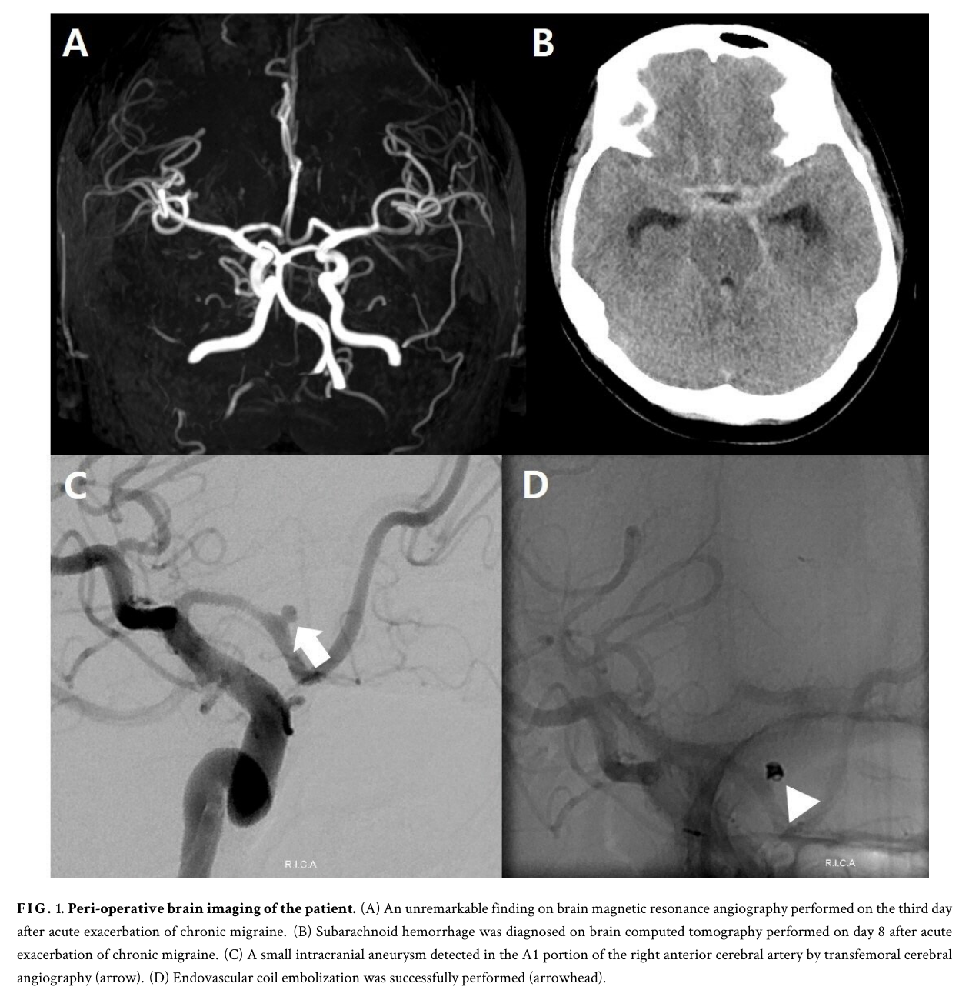

Página 3 · E8
Crises que se parecem
Muitos acham que “já tem enxaqueca” fecha o caso. Não fecha — se a dor de agora é diferente, o caso reabre.
Analogia com epilepsia
As cefaleias primárias caracterizam-se por crises — raciocínio análogo ao da epilepsia. O diagnóstico de epilepsia não existe porque a pessoa “convulsiona o tempo todo”; existe porque há crises convulsivas. Da mesma forma, o diagnóstico de enxaqueca não existe porque a pessoa tem dor o tempo inteiro; existe porque há crises de enxaqueca.
Plural = recorrência
O plural crises carrega a ideia de recorrência: não é uma crise única isolada.
Semelhança
As recorrências precisam ter semelhança entre si. Pergunta clínica âncora: “Essa cefaleia que você está sentindo agora é parecida ou igual à que costuma sentir — ou está diferente?”
Enxaqueca prévia não imuniza
Nada impede que uma pessoa já com diagnóstico de enxaqueca apresente agora uma hemorragia subaracnoide: diagnóstico prévio de primária não imuniza contra secundária grave. Dor diferente da de sempre reabre o caso — mesmo com enxaqueca prévia.
Exame normal
Ao examinar o paciente com cefaleia primária, na maioria absoluta dos casos o exame físico é absolutamente normal. Exame físico normal + crises semelhantes recorrentes (sem alarme) sustenta o eixo da primária; presença de sinal de alarme empurra para secundária e investigação.

Quiz — fixação
-
Paciente com enxaqueca há anos chega com “a pior dor da vida”, diferente da de sempre. Conduta mental correta:
Gabarito B. a diferença em relação ao padrão habitual é o gatilho de reabertura; enxaqueca prévia não é escudo.
(A) é a falsa segurança clássica. (C) alta precoce ignora alarme de intensidade/padrão. (D) exame normal não cancela alarme de “pior/diferente”; e tensional não é o enquadramento. Cai em (A) porque “já tem o diagnóstico” vira âncora cognitiva; em (C) por rotina de PS de cefaleia “benigna”.
-
O plural “crises” na primária carrega principalmente:
Gabarito B. crises = recorrência +, a seguir, semelhança.
(A) primária não se define por dor contínua o tempo todo. (C) exame costuma ser normal. (D) aura não é requisito de todas as primárias. Cai em (A) por confundir com cefaleia contínua de secundária progressiva.
-
“Exame físico normal + crises semelhantes sem alarme sustenta o eixo da primária.”
Gabarito B. esse trinômio (padrão de crises semelhantes · sem alarme · exame normal) é o eixo operacional da primária.
Quem marca falso costuma achar que “primária exige exame especial” ou que normalidade “não prova nada”. Cai no falso por confundir “diagnóstico clínico” com “diagnóstico de exclusão por painel de exames”.